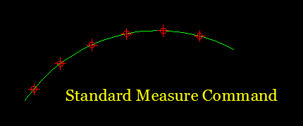
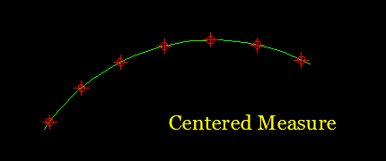

Centered Measure
This page is delivered for consistency purposes only, as part of the LeeMac sample module of DynALisp, which shows how DynALisp turns existing AutoLISP programs into a module. The program and its description are the work of Lee Mac, who keeps all the credit for them. The original page, with the latest version, is on Lee Mac's website: https://lee-mac.com/centeredmeasure.html
| Function Syntax | LM-CenteredMeasure – original syntax: CMeasure (see aliases) |
| Current Version | 1.0 |
| Compatible with AutoCAD for Mac? | No |
| Compatible with AutoCAD LT? | Yes |
| Original Page | lee-mac.com/centeredmeasure.html |
Program Description
This program is designed to emulate the behaviour of the standard AutoCAD Measure command, however, the resultant measured intervals are centered on the selected object, as opposed to extending along the object from one end.
As per the standard Measure command, the user has the option to place either Point objects or Blocks at measured divisons along the selected object, with the additional option to align the rotation of each block with the direction of the object at each point.
Example of Centered Measure Result


Bundled program notes
;;-------------------=={ Centered Measure }==-----------------;;
;; ;;
;; Emulates the behaviour of the standard 'Measure' command ;;
;; however centering the divisions along the selected object ;;
;;------------------------------------------------------------;;
;; Author: Lee Mac, Copyright © 2011 - www.lee-mac.com ;;
;;------------------------------------------------------------;;
Command Names And Aliases
As in every DynALisp module, each program of this sample module has one main command, named LM-*, and the original command names of Lee Mac's page are kept as its aliases: they run the same command, and can be added, renamed or removed in Dyl-Suite (saved in Resources\Aliases.csv).
| Command | Aliases | Name |
|---|---|---|
| LM-CenteredMeasure | CMEASURE | Centered Measure |